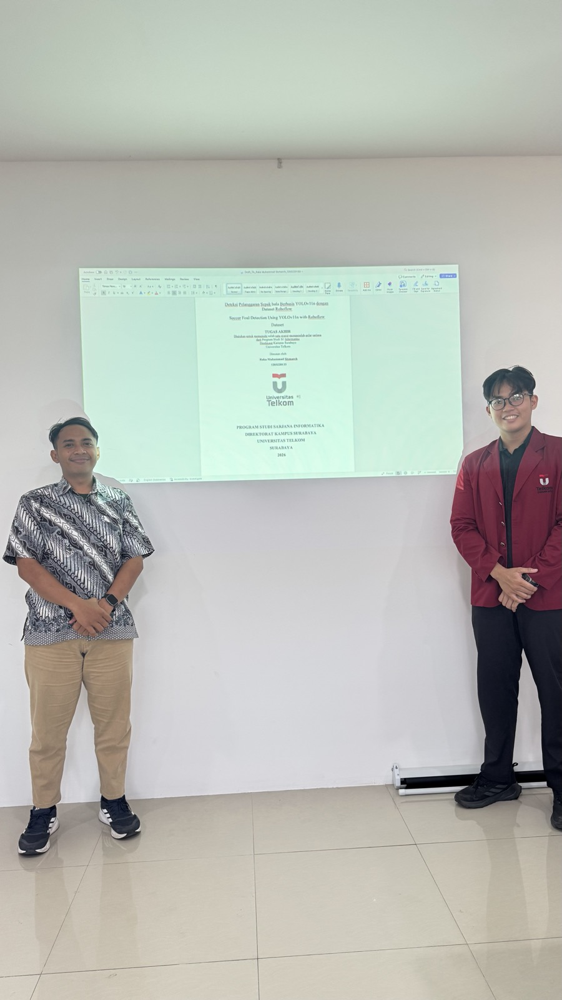

ACADEMIC PUBLICATION · SEPTEMBER 15, 2026
Football Foul Detection with YOLOv11n
Author · Undergraduate Thesis
My undergraduate thesis, “Deteksi Pelanggaran Sepak Bola Berbasis YOLOv11n dengan Dataset Roboflow,” is available in the Telkom University repository. The research explores computer vision for detecting fouls, fouling players, and victims in football imagery.
Using a Roboflow dataset and Ultralytics, I trained YOLOv11n with five-fold cross-validation. The best model achieved 98.00% mAP50 and 77.70% mAP50–95 on the study’s test set.
View university repository